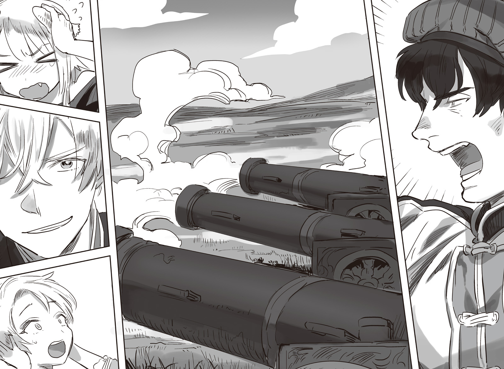
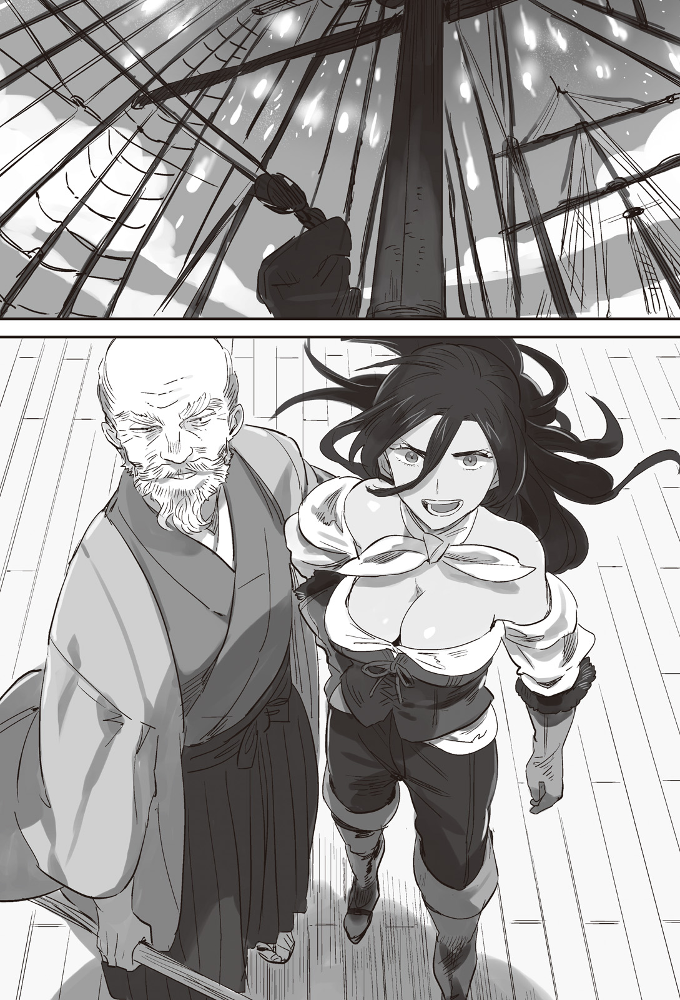

Chapter 3 – The New Sea Battle
.
Part 1
The vast amount of wheat that was brought to Nedras Kingdom was immediately spreading among the commoners. It was useful for improving their livelihood.
It didn’t stop there, the price of wheat that was sold with high price dropped drastically. It damaged the merchants of Answerer Kingdom and they were left in tears.
Queen dowager Barbara and General Vladimir who originated from Answerer Kingdom were also unable to make light of this situation.
「Crack down on this immediately.」
Vladimir said with a menacing look that wouldn’t allow any argument. But Duke Vassily treated it like a passing breeze and shook his head gently.
「It’s still too early for that. Right now we should soothe the people who are going hungry due to the heavy tax. After all it’s not like this matter hurt us any.」
「──Just because something doesn’t hurt us anything doesn’t mean that it’s always good for you.」
Vladimir strengthened his pressure while wearing a smile on his face.
Vassily’s incompetence had been working to the advantage of Answerer Kingdom until now, but this time it seemed to work to their disadvantage instead.
This was why incompetent person was beyond help. Vladimir wanted to yell that angrily, but he suppressed his impulse.
「Although the hungry wolves of the dukedom has been disposed of, that doesn’t make the people’s life to be prosperous. If they aren’t given some carrots to soothe them, they might start cooperating with the beastmen again. Or are you saying that Answerer Kingdom will provide the supplies for the people in the place of this cheap wheat?」
If Answerer Kingdom sent the same amount of wheat that Baldr sent to here, the price of wheat within the country would rise steeply.
It was clear that Vassily was suggesting that with the full knowledge that there was no way Answerer Kingdom could do that.
──But, even a man like this was the actual leader of Nedras Kingdom while Vladimir was nothing more than a retainer. There was no way Vladimir could openly act insolently toward him.
(I should ask her majesty the queen to also be present in this meeting……)
Recently Queen Dowager Barbara had completely lost interest with politics. He heard that she was shutting herself in the rear palace and indulged herself in tea party every day.
Such act was beneficial for Answerer Kingdom’s takeover of Nedras Kingdom, but now it was simply a demerit since Baldr’s maneuver began.
「What if as the result of that the people’s hearts are tipping over toward Trystovy Kingdom? You can’t possibly be ignorant of how things went in the civil war of that country.」
The biggest reason why the civil war of Trystovy Kingdom ended with overwhelming victory for Baldr was because the people’s support was focused on Baldr.
Information gathering, providing supplies, providing manpower for transportation and doing every kind of labors, the commoners were providing such support to the army below the surface in a war between fellow large armies.
The invaders often met many difficulties in the local area was because they were unable to obtain such cooperation from the local people.
There was also the method of threatening the people to forcefully order them around, but doing that would cause a certain level of resistance to occur and as the result there would be even more sacrifices.
The kingdom army that was led by Baldr never met such resistance at all, on the contrary the dukedom army received various tangible and intangible obstructions from the people.
That was exactly why the dukedom side had to stay on the defensive at the final stage of the war.
There was no guarantee that the same thing wouldn’t occur in this Nedras Kingdom. Rather the possibility of that occurring was high.
Vladimir had the self-awareness that his country had squeezed dry the people of Nedras Kingdom in order to turn this country into vassal state, so he couldn’t feel optimistic at all with this development.
「……You cannot be half-baked when doing anything. The majority of the wheat has been distributed. Even if we crack down on it, at this point it will only cause the people to hold antipathy toward us. Don’t worry, we can just wait for the right timing and fabricate some kind of wicked deed of those Trystovy bunches to neutralize the people’s good will to them. That will be enough.」
(You think I don’t already know that! That country’s king isn’t an incompetent like you. There is no way that he will give you that much time to neutralize his move at your leisure!)
Vassily was correct theoretically.
Even if they interfered at this point, they would only provoke the antipathy of the people.
That was why Vladimir wanted to at least take the wheat from Trsytovy Kingdom for his own. Nedras Kingdom didn’t have any leeway to decrease the tax anyway.
For Vassily, rather than the faraway Trystovy Kingdom, the beastman Lagunitas who was targeting him to take revenge was a more visible threat.
Vladimir didn’t care at all how Vassily would end up, but it was painful because he couldn’t speak of his true feeling openly here.
「Then you are saying, that in the end you have no intention to deal with this enemy maneuver?」
Vladimir asked that half-threateningly, even so Vassily wasn’t moved and replied dispassionately.
「I have ordered the merchants to not make any mention about Trystovy. I will also keep watch attentively to any groundless rumor.」
There was no way the people could be stopped from talking just from something like that.
But, it would be difficult to draw out any concession from Vassily even if he continued to argue like this, so Vladimir gave up.
「You better not forget this. Trystovy isn’t doing this because of kindness at all. What they will do next is a military action without a doubt.」
.
Vladimir sat down heavily on the chair in his office and sighed.
Even though he would be able to corner Lagunitas with one more step, he ended up right back at where he started with this.
In the worst case, he might even get pincer attacked by Trystovy Kingdom army and Lagunitas’s beastman army.
As expected even for Vladimir, battling Baldr who defeated even that General Mikhail who boasted of being unbeatable was a work that he was reluctant to do.
Even so that didn’t mean that he thought that he would lose.
To be frank, Vladimir didn’t give a damn of what would happen to this Nedras Kingdom as long as he could repel Baldr.
However Baldr would come here with the pretext of liberating Nedras Kingdom, so he couldn’t possibly discard this country so easily.
「──Now then, how should I take him on.」
Actually it could be said that his preparation to engage Baldr was already completed.
He wanted to remove any uncertain factor as much as possible, but if Vassily wouldn’t cooperate with him, he would simply make use of him instead.
Depending on the situation he could also dispose of him as a sacrifice just like those dukedom nobles.
「Hmph, you can be full of yourself for now. From the start my spies and the church’s fanatics has been mixed among the commoners who you thought you have won over.」
If the veneer was taken off, it would be easy to feign that Trystovy Kingdom was an even nastier invader than Answerer Kingdom.
Vassily didn’t really feel in danger because he knew that.
However Vladimir had planned even further ahead. He had even planned of working together with the church to reoccupy Nedras Kingdom, where he would then get appointed as the new regent of this country.
「Come anytime you like. And then you can become the nourishment for my glory.」
Occasionally a strategist would drown in their own strategies, but at this time Vladimir didn’t have any doubt that he had seen through Baldr’s strategy.
.
Part 2
「Well, it’s easy when we know that they’ll come like this.」
A month later, the fourth merchant caravan of Mauricia that was heading to Posada Village once more was attacked by Answerer Kingdom army that was lying in wait.
However the spearhead of their attack was blunt because from the start their aim was to loot.
If this was a genuine battle, they would also use other tricks like fire arrow or dropping rock mercilessly.
The assumption that this would be an easy work of pillaging a lot of wheat robbed them from their tension and reduced their power of observation.
If they observed really carefully, they should notice that the merchants’ screaming and angry roar were too orderly for people who were ambushed by an army.
Yes, the majority of the crews of this fourth group were Trystovy Kingdom’s troops.
They were dispatched as the result of the information gathering of the intelligence unit that was hiding in Nedras Kingdom.
The speed of their information delivery using radio was something that couldn’t be rivaled by any country at the present time.
Baldr had heard beforehand from his spies that Answerer Kingdom army was preparing to move after the third caravan returned.
He had even learned that the army would be lying in wait at the outskirt of Posada Village.
Because the secret technology of radio had to be kept, Brooks was the one who was tasked with commanding the fourth caravan.
Lately Brooks had been getting tired acting as the royal guards captain in the palace, so his blood was boiling that he could enter into the battlefield again after so long.
「Surrender! Anyone who resist will be killed!」
The number of the Answerer Kingdom army was around five hundred.
The number could be said as excessive just for attacking merchants.
Although, once the caravan was attacked, then Trystovy Kingdom and Nedras Kingdom would automatically entered a state of war, so perhaps there was a lot more soldiers standing by at the rear.
At present there was only less than 500 opponents, but it was just the right size for Brooks’s rehabilitation.
「Be a bit more on your guard. It’ll be too late already when you notice if you are so careless like this.」
Answerer Kingdom’s soldiers tightened the encirclement and got too close carelessly. They ended up paying with their life for that.
「Don’t tell me, you bastard──」
As expected, those with some ability would clearly see that Brooks was a veteran warrior even from afar even if they were still unable to recognize him as the royal guards commander.
These guys weren’t merchant at all. It was actually they themselves who entered a trap.
It was already too late when they realized that. With a sound of the air being torn apart, dozens of cylinder objects were shot out from the wagons that they thought as being fully loaded with wheat.
The metal cylinders that were about thirty centimeter in size flashed for an instant and exploded. More than a hundred soldiers of Answerer Kingdom who were standing close to each other got sent to the other world.
In order to compensate for the grenade’s weak point that was distance, it had been improved so it could be shot out using a crossbow. Just now dozens of such grenades had been fired all at once.
Answerer Kingdom’s army lost its chain of command after getting hit with such attack while being completely defenseless. It caused the number of the wounded that was double of the dead to be produced.
But, just because those wounded troops had lost their strength to fight didn’t exempt them from being an attack target.
Rather it was this kind of people who lost their fighting strength in the battlefield that became the delicious prey for their opponents.
「──Charge!」
Without even raising any war cry, the troops wordlessly mass produced enemy corpses and displayed the strength of Trystovy Kingdom military.
War cry was usually done by soldier to elevate their own fighting spirit.
It had the effect of reducing the psychological stress of human murdering another human, on top of that it also heightened the sense of solidarity between allies, so it became something indispensable in military action.
In order for soldiers to be able to act like a machine without needing to raise war cry, a lot of training and a capable commander were necessary.
「Run! We’ll be massacred!」
「H-help! ……Don’t leave me behind!」
「Shit! Reinforcement will come if we can return until the village! I’m not gonna die in this kind of place!」
The metallic sounds of swords and armors clashing, the scream of death throe, spurting blood──there was no way the soldiers of Answerer Kingdom army could endure it when just a moment ago they thought they were only going to trample some helpless merchants.
People who abandoned their allies and tried to run away but ended up dying easily because they exposed their defenseless back continued to appear.
In the end only a hundred and a few dozen from the five hndred soldiers managed to return back to the village.
「Don’t chase them too far! Retreat if you think that’s far enough!」
The spies had already reported that the enemy was building a solid defensive encampment.
They should consider it enough that they could win the first battle and obtained the fact that it was the other side that started it.
.
Part 3
The report that the soldiers of both countries had battled near the border was brought to General Vladimir in the capital Hazuz within the same day.
「It was earlier than I thought but──this defeat is disappointing.」
Although the troops were letting their guard down because they thought that their opponent was just merchants, there should still be overwhelming amount of difference in number.
「There was a report that the enemy used unknown weapon that was similar with the relic……」
「Then it can’t be helped.」
Vladimir nodded deeply at the words of his adjutant Chernenko.
That weapon could easily rival an army of a thousand on its own. In addition if it was available in sufficient number, than it could rival even an army of ten thousand.
Gunpowder weapon wasn’t monopolized by Baldr anymore.
This time Answerer Kingdom’s army didn’t use such weapon, but the defensive line that was prepared against Trystovy at Posada Village was supplied with a lot of gunpowder weapons.
If Brooks tried to obtain even more achievements and continued to chase after the fleeing soldiers, his troops would be bathed with the baptism of rocket arrows and grenades.
「Notify the homeland of Trystovy’s invasion. We were assaulted by Trystovy Kingdom army that disguised themselves as merchants. Spread that kind of rumor too everywhere.」
Trystovy would declare that their side was the one that attacked the merchants anyway. At the very least they needed to create an alibi.
「We have been generously prioritized to receive some of the few relics available. Let’s teach them that this beastman king is in the end just a paper tiger.」
The result of the conflict surrounding Nedras Kingdom would decide the outcome of the decisive battle between Answerer Kingdom and Trystovy alliance that would occur in the near future. Baldr and Vladimir had the same thinking in regard of that.
Each of them believed that they would emerge the winner over the other.
Vladimir continued to wait for the incoming invasion of Baldr with a quiet confidence.
He didn’t even know that his delight would only be momentary.
.
Part 4
After receiving Brooks’s report about the battle, an army of 30000 departed from Millianna toward the border with Nedras Kingdom.
The commander-in-chief of the army was the old general Ramillies. Serving as his second-in-command was the royal guards commander Brooks. Gina was also participating as a guest general.
In addition Ramillies’s successor candidates, Gerhard and Barnard were positioning themselves at the wings of the army as regimental commanders.
This was the first experience of the kingdom army to go in an expedition after it had been reorganized after the conclusion of the civil war.
The army marched splendidly with perfectly ordered pace. It was the clear proof that Ramillies’s skill hadn’t withered at the slightest.
「Is it really alright for Gina-sama to also come along with us?」
「We fellow old people should get along with each other here.」
The beastman unit didn’t accompany the army this time, so there was no necessity for Gina to accompany this army that was composed from the elites who had followed Baldr since Antrim and the reorganized group of Trystovy Kingdom army.
Even so Gina chose to accompany this army was because she had the intention to give way to the new generation of the beastman.
Besides the bond between Ramillies and Gina as fellow old people who didn’t have long to live was quite deep.
「──Listen well all of you!」
Ramillies threw out his thick chest and yelled loudly.
「The aid of our merciful king that was brought to Nedras Kingdom for the people there who are suffering from Answerer Kingdom’s extortion was greedily targeted by those hungry wolves Answerer Kingdom army! They attacked innocent merchants and on top of that they stole the food that was intended for the commoners. Even if they are the army of the leading country of this continent, justice and our king shall not forgive them! The heaven’s will is with us!」
Ramillies ignored the fact that Brooks and his subordinates were shrewdly mixed among those merchants and he continued to criticize Answerer Kingdom.
「It’s just as all of you have already known! The future where countries won’t quarrel between themselves and no discrimination between human and beastman exit will soon arrive. We shall burn all those fools who are clinging to the obsolete old era to nothing and cut open a path to the ideal future!」
「UOOOOOOOOOOOOOOOOOOOOOOOOOOOOOOOOOOOOOOO!」
The soldiers roared until the very air itself was trembling.
Many of these soldiers had the experience of being liberated from the tyranny of the nobles and had their family saved from massacre.
Trystovy that was completely exhausted from the civil war managed to achieve recovery both materially and morally. The commoners were now enjoying peaceful and prosperous life that they had never experienced before.
For them Baldr was none other than the messiah who brought peace to Trystovy in reality. They were filled with the fighting spirit to put their life on the line to repulse anyone who tried to harm this peace.
Even if one searched this whole continent, they wouldn’t find any other army with morale as high as Trystovy Kingdom army.
The war cries echoed and the people of Millianna waved their hands to see off the soldiers who went to war.
The soldiers looked majestic.
The army of this country right now was different from the past. They weren’t just the vanguard of the nobles for the sake of bleeding dry the people.
They were the protector of the kingdom, with the pride that they were fighting in order to protect the world’s order.
The morale of the soldiers who were showered with the cheers of the people heightened all the more.
The diplomats of other countries who were staying in Millianna wrote to their country in detail about the grand dispatch of Trystovy Kingdom army.
The army’s morale was high and their proficiency was also high. In addition Baldr’s legends were also adding some more flair to their aura. This army was finally going to an expedition that crossed the national border.
All the diplomats were aware that the result of this war might change the history of this continent.
Everybody believed that Baldr was staking everything he had into this battle.
「We will definitely present our military gains without fail to our king before his majesty personally set out to the frontline! Don’t you all dare to tarnish the prestige of his majesty’s ever-victorious record!」
A roar of agreement rose once more at Ramillies’s loud shout.
Strictly speaking, not all of Baldr’s battle ended in victory. However in the perception of the common folks, Baldr was truly an unbeatable genius. The perception of other countries was also not so different.
The conquest of this continent by Trystovy alliance was finally going to begin. Furthermore the king Baldr still had the composure of not going to the battle personally.
Trystovy Kingdom army looked to be in disadvantage in overall military force. What kind of magic they would display this time to win?
However even such expectation didn’t matter at all.
Far from departing later than Ramillies, as soon as the ceremony was over, Baldr secretly departed to Sanjuan Kingdom.
Actually Trystovy Kingdom army was dispatched grandly like this was only to give an impression to the whole world that the troops were concentrated at the border with Nedras Kingdom. That was why Ramillies’s departure was held so flashily like this.
.
Part 5
Trystovy finally took a step forward to dominate the whole continent.
The one who reacted the most sensitively to that information wasn’t Answerer Kingdom that was their rival for supremacy, but Europa Church.
「That demon finally showed his true color! Now is the time we show the world the power of the church to that irredeemable enemy of god!」
A total of 10000 soldiers responded to the pope’s encouragement and marched out from the pope territory under the pretext of crusade.
Trystovy had mobilized 30000 troops as an advance party. If the troops that Baldr personally commanded also got dispatched on top of that, then thinking with common sense, Trystovy wouldn’t have any more strength to spare to invade the pope territory.
Although Trystovy Kingdom’s military had been drastically improved after the conclusion of the civil war, they predicted that at most they would only be able to mobilize 60000 troops in total.
After all it would be difficult for Trystovy Kingdom to conscript even more people than that while currently they were busy with rebuilding the country.
Considering that they also had to assign 10000 to 15000 troops to maintain public order and defend the borders, it was only natural for the church to think like that.
On the contrary Answerer Kingdom was staying passive.
They were harboring a serious dissatisfaction at the church that was reluctant in providing the technology of the relics.
Just as General Vladimir said, in some cases gunpowder weapon’s existence could rival even an army of ten thousand.
As a big nation it was only natural for Answerer Kingdom to desire to absorb the knowledge of the relics as much as possibly so they could mass produce them by themselves without relying on the supply from the church.
Because of that Answerer Kingdom wouldn’t change their passive stance of refraining from any large scale battle until they managed to pile up the relic weapons to some degree.
However for the church that wanted to prevent the relics from spreading, such action was a head on opposition to their intention.
「──Those fools. The world will only be wrapped in chaos if the forbidden knowledge is spread.」
The pope spat out those words with a gloomy feeling.
The foolish people who were ignorant of everything was driven with the desire to expose everything, but that would also mean the annihilation of the church.
(I thought that my faith has been completely extinguished, even so the church is still the only place I can depend on huh.)
He obtained this position as pope after going through many schemes.
No matter how bloody and hellish his path until here was, to deny it also meant to deny his own life.
The pope knew that dispatching troops to Nedras Kingdom wouldn’t lead to the decisive victory that he wished for. Even so he still made this decision because of such circumstance.
「If he meet with a crushing defeat at Nedras Kingdom, his prestige of invincibility will also be peeled off.」
Even now there were people who were captivated by Baldr’s success story of leaving Cornelius until he finally became the king of Trystovy.
However such image was brittle the moment it failed even once.
Baldr’s novel policies could stand under the limelight and disrupted the good old-fashioned tradition of Aurelia Continent was solely because he had kept winning until now.
If he was defeated, then doubtful gazes would be directed to him. If that happened, people would fall back to their true nature that wouldn’t unconditionally accept something new.
Right now the number of soldiers that the church could dispatch away from the pope territory that was the church’s holy land was around 10000. If this was done before Baldr’s emergence, the church would be able to dispatch several tens of thousands of soldiers easily.
「──Cursed demon. The god’s judgment shall fall on you without fail this time.」
The pope had even dispatched his few remaining assassin squads in order to obtain a chance to take down Baldr in the battlefield if luck was on their side.
The routes where a large army could be dispatched from Trystovy Kingdom to Nedras Kingdom were limited.
If the unknown paths that were only used by the locals were excluded, other than the route that crossed Dyatlov Mountain Range to reach Posada Village, all the other routes would touch the border with Grand Duchy Tenedora or Kadiros Kingdom.
Grand Duchy Tenedora was a vassal state of Answerer Kingdom too, so it was also possible for Trystovy Kingdom army to forcefully invade their border.
But, everyone thought that Trystovy Kingdom army didn’t have the intention to expand the battle more than necessary.
Therefore Trystovy Kingdom army would definitely invade through this one route with all their strength. There the church’s force and Vladimir’s force would crush them.
The pope and Vladimir’s strategies matched each other.
What was left was how Answerer Kingdom would perceive this chance and how they would take action──.
That country wasn’t so foolish that they would just ignore a winnable battle.
However the pope forgot.
In all of Baldr’s battles until now, he was able to obtain the prestige of being ever-victorious as much as he wanted because he always deviated from the rules that everyone was unconsciously restricting themselves with.
.
Part 6
At the center of Sanjuan Kingdom, Toledo.
Right now Selina’s confidant Rorona had been entrusted with the company here. Baldr, Selina, and Rachel were visiting a large site that was under her management.
「Long time no see Rorona. How goes the progress here?」
「Your sex appeal has increased even though I haven’t seen you just for a bit. Is it as I expected that graduating from virginity bring some differences?」
「Unah?」
The counterattack from Rorona who Selina thought as big sister in her heart made her went red until her ears. She was completely speechless.
「It’s just jealousy of the woman who is late to marry and got beaten to the punch. But, I’m glad that it looks like Ojou-sama is happy right now.」
「Rorona……」
Since her father died and left her, Selina had been living together with Rorona all the time until she married with Baldr. There was something pressing on Selina’s chest when Rorona said that to her.
「Well, I just got proposed the other day, so I’ll also catch up to Ojou-sama soon.」
「Wa-, WAIT A SECCCCCCCCCCCCCCCCCCC!」
Rorona was certainly a beauty with big breasts. She had sharp and brilliant mind and on top of that she could do housework perfectly. She was such an almighty beauty that it was strange she hadn’t married until now.
However at the same time Rorona had high ideal and sought fastidiousness in everything. And most of all she was a late bloomer and also a very shy person. Selina was aware of that.
In other words she was a capable woman with kuudere attribute. (TN: Kuudere, acting indifferent while lovestruck)
And now that Rorona! The woman who was like her own big sister! Had obtained a fiancée when she left her just for a bit!
Selina shrewdly shelved away the fact that she herself was a woman who married with the one she loved and grabbed Rorona’s shoulders like a father whose daughter would leave the house. She then interrogated her.
「Who? Who in the world is this man? I don’t think that someone like Rorona can possibly be tricked by some suspicious guy, but if you’re actually being forced by a dirty old man with high status──」
The authority that she possessed as a concubine of Trystovy King wasn’t just for show. Selina decided to make this unknown man to regret ever being born, she would make it so this man couldn’t even buy a single grain of wheat if he had tried anything with Rorona.
「There is no need to worry. This man is someone decent.」
It might not be the case when their company was still just a tiny company at Cornelius, but as the president of Savaran Company and the one standing at the top of the head office of Dowding Group in Sanjuan Kingdom, someone who could possibly threaten Rorona was only the king himself or at least an authority of the kingdom who was really up there.
Mere nobles from the countryside would have to be considerate and lower their head instead when they faced Rorona.
「──Actually recently I have the privilege of going out with Admiral Jose.」
「WHAAAAAAAAAAAAAAAAAAAAA?」
As expected, it wasn’t just Selina, even Baldr and Rachel couldn’t help but feeling shocked hearing that explosive statement.
Gazes that were sharp like arrow were directed toward Admiral Jose who was accompanying them.
Selina’s gaze was even filled with killing intent.
「Hahaa, you know, today we’re going to display the you-know-what, so can we postpone this matter for later?」
Jose ignored the murderous gaze toward him calmly with an expression that was playing innocent. As expected this person had ball of steel.
「A middle-aged man at the middle of his forties is……」
「Uh」
It seemed that even Jose who was always acting aloof was bothered by that. He showed a slightly hurt expression. A man at his age couldn’t help but be sensitive with his age.
「Don’t mind it Jose. It doesn’t matter how old you are, you are the number one man for me.」
「……I’m beaten. It’s you who are a woman who is too good for the like of me.」
The pink colored space that was created around them made Selina felt lonely. At the same time she also recognized that Jose was a partner that her big sister wished for from the bottom of her heart.
「She is my treasured big sister. I’m not gonna guarantee your life if ya dare make her cry alright?」
「I swear on my life.」
「──Still, just what triggered this? Though of course ya two are in the same country so there must be a lot of chances to meet until now.」
Jose was a famous admiral who was well-known not only in Sanjuan Kingdom, but throughout the continent. He was a very popular existence among the nobles who wanted to obtain influence within the military.
Jose was sick of such power struggle. Even without that from the start he was quite indifferent in regard to male and female relationship, so everyone thought that he would stay single for his whole life.
What shaken his determination was the event that happened when firing experiment of the cannon that was jointly developed by the merchant company and the military was carried out.
A cannon barrel with shoddy workmanship suddenly exploded. The two officers who were in charge of the cannon was heavily wounded, while a fragment attacked Jose who was observing the test at that time.
The one who put herself on the line to protect Jose at that time was Rorona.
Fortunately Rorona wasn’t injured at that time. Even so Jose felt greatly ashamed that he got protected by a woman instead of otherwise. Even he had his pride as a man who should be the one protecting woman.
At that time Rorona asked Jose 「Admiral, are you injured?」 without a single change in her expression. Jose could only lowered his gaze with a red face. However there he saw how Rorona’s hand was shaking and realized.
This beautiful and courageous woman refused to show her weakness to anyone.
Jose thought of Rorona as lovely when he realized that.
With that realization, he spontaneously invited Rorona to a dinner. He accidentally also had the nice excuse of wanting to thank her for protecting him.
Both of them were late bloomers and had good head above their shoulders.
They would surely take their time to slowly nurture their romance……that was what everyone thought, but the fact was stranger than even light novel.
It was unknown what kind of magical situation happened, but the two of them entered a male and female relationship within the very same day.
「Uu-uu-……my Rorona was……」
「Admiral Jose……he is a carnivore despite his appearance.」
「Whether it’s in the past or in the future, it’s impossible for me to act like that except with Rorona. Even I can’t comprehend just why in the world I was able to be that bold at that time.」
Jose scratched his head shyly with reddened cheeks. Such expression was extremely rare for him to make that both Baldr and Selina spontaneously smiled.
「Hahaha……it seems that even I still had some backbone remaining to be able to capture a lovely woman like Rorona.」
However at this time Rachel was the only one who noticed.
How Rorona was sporting a devilish smile that was saying Just as planned! at this time.
(Admiral Jose, you weren’t the one doing the capturing. You were the one who got captured. In this case surely silence is golden.)
「However the time is like this, so I’m hesitating of when we are going to hold the ceremony.」
Jose said that with a happy smile.
「First let me express my congratulation to you but……perhaps we should move on to the main topic right now.」
Urged by Baldr, Jose renewed his expression and nodded.
「True. After all that is the reason why your majesty is here.」
Yes, Baldr was visiting this Toledo in order to watch the firing experiment of the cannon that was finally starting to get mass produced.
After flamethrower and rocket arrow had been implemented in practical battle, it was only natural to progress to gun and cannon next.
However unlike flamethrower or rocket arrow, the mass production of firearm was accompanied with difficulties.
The test site for experimenting in making use of those weapons was this Toledo’s outdoor testing ground.
The research team had moved to this place from Antrim. Under the watch of Rorona, they conquered the technological challenges one by one until they reached this point.
The history of cannon at earth was long. It was confirmed that the Mongolians had already used bronze cannon in the thirteenth century.
Because the shooting mechanism was simpler compared to gun, cannon rapidly spread from central Asia until Europe at the fourteenth until fifteenth century. And then at the battle of Constantinople, cannons destroyed the Theodosius ramparts that were thought as invincible. It brought about the destruction of the fortress system of the old era.
Although cannon was only called as the god of the battlefield since the 18 th century when grapeshot and explosive shot were popularized. Before that it was simply a weapon that was exclusively used for siege to destroy castle walls.
Cannons were almost never in use in field battle. But there was a reason why Baldr was fixated with mass producing it.
「First, second, and third cannon, begin shooting!」
With a single order from Jose, the three cannons began firing.

These cannons was the latest model of cannon that was improved from being made of bronze to using cast iron.
At first they couldn’t maintain the quality of the cast iron, so they mostly used bronze, but after they got brighter prospect with the reduction of bubbles in the metal and the regularizing of the homogenization, they took the plunge and renewed the cannons.
The trials and errors that were needed to reach this point were a series of hardships that even made both Rorona and Jose to shed tears.
There were even casualties from explosive incidents.
The time needed until the cannon could fire in succession stably like this was countless.
Six men were in charge of one cannon. After the cannon finished firing, they swiftly pulled the ropes and put in fire hook into the barrel to clean the soot inside with smooth movement.
And then they inserted a bag that was stuffed with gunpowder into the muzzle, and then it was covered with a cloth that looked like pot stand. Then a man used a pole to stuff them deeper before they finally inserted the cannon ball and then covered it with even more cloth.
This was a countermeasure so that when the cannon barrel was pointed below, the cannon ball inside wouldn’t roll out.
In addition the pedestal was moved with the principle of lever, then they corrected the firing angle before the preparation for the second shot was finished.
The time to finish all those procedures was around 40 seconds. At first they needed more than one minutes, but the time span had been reduced till this much as the result of their training.
Smokeless gunpowder still hadn’t been developed. They were still using black powder, so after firing there would be thick white smoke puffing out, but their field of vision had barely recovered at this point for the second shot.
「Begin the second shot!」
Explosive sounds roared thunderously. The cannon shells flew out, at the same time white smoke blew out with terrifying speed and blocked their sight.
Baldr and others who were observing it from some distance away witnessed the cannon balls flying toward the target accurately.
「──Impact!」
A heavy impact sound and dust cloud rose together with the cannon balls hitting.
There was no explosion. It was simply round iron balls crashing on the ground. Baldr thought that the sound was more stifled than expected and there was no showiness at all.
.
『──Ishibiya huh.』 (TN: Ancient type of cannon)
Sanai muttered with a deep interest inside Baldr.
Cannon was also brought to Japan in the Warring States era. It was used as castle siege weapon at the winter campaign of the siege of Osaka at 1614 CE. At that time a hundred and dozens of cannons were used at the same time.
Gamou Clan that Sanai served also possessed some number of cannon──ishibiya. He had witnessed their destructive power several times.
『As expected this cannon still can’t rival the modern era cannon……』
If they had the cannon that was attached with recoil brake and wheels that was developed since Napoleonic Wars to act as field artillery, they would be able to do almost anything, but this achievement couldn’t be cleared because of the problem in metallurgy technology and precision cutting.
This cannon that finally became usable in battle was at the level of cast iron cannon like in earth’s 15 th century.
『Are ye planning to attack Osaka Castle with this?』
Sanai was an excellent field battle commander, but in the first place the thinking of using cannon in field battle didn’t exist.
Realistically, firing cannon with shell that inflicted damage using only kinetic energy had very limited destructive power in field battle.
『Well, that’s the case on land.』
『Aa! Sea huh! On sea one only need to destroy the ship──』
『That’s how it is. Around this time Urraca must also be experimenting joyfully with these cannons on sea.』
Cannon was only used for castle siege on land, but it had been elevated as the god of the battlefield very early on sea.
Urraca was already staying on her ship nonstop in order to train on increasing her proficiency with using cannon on sea.
Baldr and others came to Toledo’s testing ground in the same time with that.
.
「There’s also no problem with the toughness. The life span of the cannon barrel is sufficient for a single sea battle.」
Jose spoke with a face that was filled with confidence.
The problem at the beginning of the cannon development was the destruction of the cannon barrel by the gunpowder’s explosion and increase in temperature.
Precision was sought in the materials of firearm, because of that the scattering in the quality of the cannons couldn’t be reduced at all.
The cannon development took this much time starting from the planning, experimenting, improving iron quality, improving the precision of the manufacturing, until the mass production was because of such reason.
Baldr thought that the cannon development could make it in time today because of divine providence.
「I think Urraca will keep firing off her cannons until the limit of their life span before going back. So let’s prepare the replacements for her and head to Cadiz.」
「I’m really looking forward to this. This is why I can’t take off my eyes at all from your majesty’s doing.」
The appearance of cannon would change the shape of sea battle.
The traditional boarding action was already in the process of becoming obsolete due to the appearance of rocket arrow, but the cannon this time would decisively bring that chance.
Urraca who lived in the sea and in battle couldn’t possibly stay quiet after being gifted with this kind of toy.
.
Part 7
「You guys, if you still cannot hit it the next time, you know what’s going to happen to you right?」
「Boss lady, no matter what hitting that boat is just impossible.」
「If you’re a crew of this La Mancha, then throw away the word impossible to be shark food!」
Originally a cannon of this technological level should be fired after approaching the enemy ship until they could see the opponent’s face, so its accuracy couldn’t be said as good even as a flattery.
The cannon’s own recoil was already too strong, on top of that it was put on the ship where there was always shaking.
Naturally the cannon didn’t have anything amazing like stabilizer to improve its stability. Furthermore when in battle, an amateur couldn’t possibly stay standing on a maneuvering ship.
Trying to hit a small target like a boat in such situation could only be taken as an unreasonable demand.
「Hard Starboard!」
「Ma’am!」
「Fore top sail a back!」
「Ma’am!」
The ship’s speed rapidly dropped when the sail of the fore mast caught the wind from the opposite direction.
However even though the ship was performing such abrupt braking, there was almost no shaking at all. Even a cup that was full with water might not spill its content at all here. It was truly a masterful performance of ship handling.
「──I think that I still won’t lose to you Ojou when it come to reading the wind, but I’m already not your match anymore when it comes to ship handling.」
It was an acrobatic ship handling that even made Urraca’s past rival to lament in mortification.
The wheel was returned to the original position, and then the moment La Mancha approached the distance of 200 meters at the right of the boat, Urraca swung her right hand horizontally.
「FIREEEEEEEEEEEEEEEE!」
「Ma’am!」
La Mancha had four cannons equipped at each side.
That number was the limit for La Mancha that didn’t have a big frame like a galleon.
Unfortunately La Mancha wasn’t a ship that was designed to be installed with cannons on board.
Currently three galleons that were designed to be equipped with cannons were being manufactured in Sanjuan Kingdom navy’s factory. It was planned that one of them would become Urraca’s flagship.
When four cannons fired at the same time, the white smoke that they spouted off was a lot.
「Match the trim! Raise the speed!」
「Ma’am!」
La Mancha smoothly sailed out from the curtain of white smoke. Four water pillars visibly rose in front of it.
「Hit! Target hit!」
「Yosh!」
Urraca thrust her fist to the sky and made a guts pose.
Urraca was honestly happy, but Kailas and the captains of the other ships were astonished.
The feat just now was a miracle that was only possible because Urraca moved the ship like her own limbs and she was also thoroughly aware of the habits and the working of all her crews.
If they were told to do the same thing, they had no confidence of hitting a target that was further than 100 meters. If they were honest, they wanted to close the distance until 50 meters first before firing.
「The problem is how much time it takes until we can fire again.」
Unlike firing on the ground, the space on a ship was limited. To perform the detailed works like clearing the smoke, cleaning the soot, inserting the gunpowder, and many other procedures smoothly, a lot of training was needed.
Even for the elite navy that was the pride of Majorca Kingdom, there was no way they already had the specialist for the cannon that had only just gotten used for the first time.
First they had to raise those personnel from scratch.
Urraca was trying to shorten that effort half forcefully through real battle on sea.
But this was still insufficient.
The new sea battle that she held as her ideal didn’t stop with just this much.
「Second ship! Third ship! Follow the flagship in a single line formation! Left attack ready!」
Even after achieving such godly feat, Urraca still didn’t plan to stop and ordered her fleet to follow her in practicing cannon firing once more. But Kailas and the others hurriedly stopped her.
「Wait! Please wait! The cannons are at their limit already! If they explode it will take time to repair the ship!」
「Besides we have delayed too long from our schedule to return to the port! If we don’t hurry back, the schedule of our departure will be a mess!」
「Muu……」
Urraca still looked unsatisfied. And so the vice captain spoke the magic words to convince her.
「Besides his majesty Baldr is going to arrive soon isn’t he?」
「──Yosh, let’s go back you guys!」
She wasn’t satisfied with her training result, but she had grasped some degree of effective result.
In that case her reunion with her beloved Baldr had higher priority. Wasn’t that only natural for a maiden?
「Mizzen spanker, whole out!」
「Ma’am!」
「Wait for me Baldr! I’m going back now!」
.
Part 8
「Even so it’s huge huh……」
Baldr looked up and sighed in admiration once more seeing how big it was.
Two huge ships were floating at the naval base of Cadiz Harbor.
Those ships that were transferred from Trystovy Kindom to Sanjuan Kingdom had been improved drastically.
This ship couldn’t be expected to be maneuverable and fast from its design, but it had been improved so that it could sail through open sea to some extent.
「Well, a ship that only has size doesn’t have a lot of way it can be useful, but it’s useful for this kind of time.」
Baldr handed this ship to Sanjuan Kingdom because he knew that.
This huge ship──Gigante that forced Baldr into a hard battle in the past had become something indispensable for his strategy this time.
「The troops can’t be transported unless we use a ship this big after all.」
Jose scratched his head while smiling wryly.
However inside he wanted to scream out his irrepressible admiration.
Baldr’s plan that was making use of this Gigante was a landing operation at the rear of Nedras Kingdom.
The plan was to transport 5000 beastmen and elite troops of Trystovy Kingdom and disembarked at the port city Ninliver that was located at the west coast of Nedras Kingdom. When Jose heard this plan, he even doubted Baldr’s sanity.
Until now, sometimes pirates would land at the coast and pillaged nearby city and village, but there was no prior case of someone carrying out a large scale landing operation.
A normal strategist absolutely wouldn’t get the idea of carrying out such suicidal act.
After all sail battleship wasn’t suited to transport a great amount of passengers. And if the ship sank then there would be no saving them.
The land army that had been raised by spending a lot of time and money being annihilated on sea without being able to offer the slightest resistance. No tactician would be unable to bear such thing.
In addition the navy force of each country was in balance with each other. From the start there wasn’t any room to allow such landing operation to succeed easily.
However that balance had crumbled.
A man at Jose’s level was unable to even perceive such reality. As expected that was because he hadn’t ridden himself of the traditional way of thinking.
Now that the navies of Trystovy Dukedom and Answerer Kingdom had been repelled, the sea at the south of the continent had become the backyard of Trystovy Kingdom and Sanjuan Kingdom.
In addition to that they had also managed to introduce cannon to be installed on ship.
If they could successfully realize this large scale landing operation for the first time in history, they would be able to tear apart the completely defenseless flank of Nedras Kingdom. The possibility of them being able to recover from there was close to nonexistent.
Even if they tried to deal with this surprise attack, they would have to show their back to the 30000 elite troops under the command of Ramillies.
If Nedras Kingdom’s beastmen also threatened the country’s rear in concert, it would be very doubtful whether the common soldiers would be able to keep their morale high or not.
.
「Baldr~~♪」
「We have been waiting your majesty.」
「Sorry to make you wait Satsuki, Gitze.」
Satsuki hugged him energetically. Baldr hugged her back with a broad smile.
Gitze had strongly wished to be the one leading the beastman unit that would become the main force numerically for the landing operation. Or rather, he just wouldn’t take no for an answer.
Satsuki would accompany Baldr as his bodyguard as well as reserve corps commander.
「……We too can be slightly useful if there will be boarding action though.」
Gitze frowned in disappointment.
He had also witnessed the cannons. And so he was aware that boarding action would never happen anymore except in some special cases.
「After we disembark we will have to deal with the enemies by ourselves. I’ll be counting on you for that, Gitze.」
「Yes your majesty! I shall offer my whole being for that.」
Gitze also understood that the mission this time would leave behind a strategic impact in history.
The people of this world had no way of knowing, but what Baldr was trying to do was the reproduction of Incheon landing operation that was carried out by Douglas MacArthur.
Even though the mission was severely criticized as only having a success rate of 0,02 percent due to the bad terrain of the landing site, the mission was executed due to MacArthur’s unbending will and achieved a success that was engraved in the military history.
This landing operation succeeded were due to the following reasons.
First the main force of North Korea army was held in place by the final defense line of UN troops at Daegu.
North Korea would be able to win if they broke through Daegu and exterminated the UN troops from Busan.
Because of that North Korea army concentrated their troops at the frontline and strengthened their offensive.
The next reason was the fact that the landing was a completely surprise attack.
It was said that the intensity of the high and low of Incheon Harbor’s ebb and flow was number two in the world. When the tide pulled back, the coast’s shoal would be completely covered by quagmire.
Because of that, the timing of the landing was only possible around two hours during the spring tide.
That was why even the North Korea army thought that landing to this harbor would be completely impossible and didn’t guard it.
The top brass of America army predicted that the enemy had surely spread out sea mines and assigned strict security there, but in reality the place was completely empty.
The last, Incheon Harbor was relatively near to Seoul and main road that was used for supply line.
And so when North Korea army had cornered the UN troops until there was just one more step left, Seoul had been recaptured without them even noticing it. The impact when they received such report was especially powerful because there was nothing that they could have done anymore at that point.
The North Korea army that had their supply line cut off by the landing force ran out of supply. Due to that they also couldn’t maintain their chain of command and they were annihilated.
The reason why this operation was highly praised even until the later generation wasn’t simply because the strategy was amazing, but also because it was an operation that put importance on psychological impact to the enemy.
In that sense, this landing operation that Baldr would carry out at Nedras Kingdom’s Ninliver could be said as having fulfilled those three conditions.
The only remaining worry was──.
「The mission will definitely succeed if Hortnbeck Kingdom doesn’t find us.」
Jose spoke that with a sigh.
Answerer Kingdom navy was in the middle of reorganization right now, so they hadn’t advanced as far until the sea at the south of the continent.
The only sea force that could oppose Sanjuan Kingdom and Majorca Kingdom’s combined fleet at Nedras Sea was only Horntbeck Kingdom navy.
Mulberry’s fleet was currently patrolling the east of Orkney Sea as diversion, but Jose thought that there was no way that Odysseus would fail to notice.
He was a man who Urraca recognized as a formidable enemy.
Although it was very vexing to admit, but Urraca didn’t recognize Jose as a rival.
Although Jose’s was Urraca’s superior in strategy, he was never able to stand side by side with her as a sailor.
The only people who Urraca recognized as formidable enemy was Kailas of Sanpaniradeon in the past and then currently it was Odysseus of Horntbeck.
「This cannon is for that──well, it won’t be me doing anything though. In the end it will all depend on Urraca.」
Baldr lifted his gaze. There La Mancha’s sails were starting to appear from the other side of the horizon.
.
Part 9
「I missed you! Baldr!」
Urraca got down from La Mancha and immediately hugged Baldr.
「Welcome back Urraca.」
The two of them weren’t embarrassed even though they were hugging in front of many people. It could be said that the two of them had obtained immunity of romance.
Satsuki pouted a little and pinched Baldr’s shirt. It was a cute gesture.
「Have you managed to get proficient with the you-know-what?」
「No problem! Is what I want to say, but you will need someone at my level or Kailas to operate it skillfully. That rocket arrow thing is still easier to use.」
Rocket arrow was a primitive rocket. It was a weapon that relied on quantity because it wasn’t expected to be accurate from the start.
Compared to that, the skill and manpower that were required to use cannon were incomparably greater.
「──But」
Urraca paused and grinned fearlessly.
Her smile was filled with dreadful pressure that only super first class genius had.
「The battle is going to change. There is no doubt──the specialized battleship with that cannon will be the one to rule the sea from here on.」
Just like how Habsburg House’s invincible fleet ruled the Mediterranean Sea in the past. Or just like how Francis Drake destroyed Spain’s invincible fleet at Calais Sea.
The navy that could handle this cannon skillfully would dominate the sea of this continent for the first time in history.
「To be honest, I also feel somewhat lonely.」
At the same time it would also mark the end of the sea close range combat using boarding action or arrows.
And yet Urraca didn’t have the slightest thought of wanting to cling on the pleasant traditional battle.
A good ship with better operability, a good ship with better seaworthiness, a good ship with better speed.
By nature sailors were greedy in absorbing knowledge.
Even in a clear weather that looked tranquil, the sea was always a place where they were side by side with death.
For them who considered the sea as their final abode, they wouldn’t allow any easygoing compromise.
「Do you think that Horntbeck will show up?」
Baldr asked Urraca about his biggest worry.
「If we’re lucky──no, if we’re unlucky we’re going to meet them. The sea is really vast. But mysteriously people are fated to encounter the opponent that they have to fight on it.」
Urraca blinked happily. Her eyes were saying that they would definitely end up fighting Odysseus.
「More importantly, Baldr.」
Urraca had something that she wanted to say all this time. Although embarrassed, she whispered those words into Baldr’s ear.
「Today is my turn. Isn’t that right?」
As expected, Urraca yielded the turns to the newly wed Silk and others right after the wedding ceremony.
However Urraca wasn’t so softhearted that she would let go of the chance that finally came to her.
Urraca grinned like a fierce predator while breathing roughly from her nose. Satsuki turned a pitying gaze toward her as though she was looking at a pitiful lamb that was being targeted by a wolf.
Aa, even though that lamb is so purely looking forward to have fun, it’s going to be deliciously eaten on the dining table tonight.
「Being a woman is joyous but also painful nya.」
.
She had polished her skin to be as beautiful as a gem just for this night. In addition there was the transparent satin slip that was ordered from the southern continent.
Urraca who had never allowed anyone to share her bed until now was sweating damply from her skin in nervousness.
Urraca who was dressed in her battle outfit gulped with her chest swelling up from excitement.
Just how much she had waited eagerly for this day to arrive?
Even among Baldr’s wives, she had a body proportion that could contend for the first or second place. In addition she had the conviction that her body that had been trained in many battles wouldn’t lose against anyone.
What was left was to use the killer technique that had been passed down in Majorca royal family for generations that Maria taught her. With that she would make the holy sword between Baldr’s legs to be putty toward her!
In order to protect the person’s honor, it had to be said that Maria had properly and seriously instructed Urraca about the bedroom manners.
It was the compassion of a stand-in big sister so that Urraca wouldn’t be traumatized by her first time.
It was another question whether her teaching would work against Baldr or not.
「B-Baldr……!」
Although, Urraca was someone with determined spirit by nature. She was unable to follow Maria’s teaching to obediently submit her body to a man.
Anything she wanted, she would take. Strength was justice. Following that rule of the sea, Urraca’s kiss was like a devouring beast, then she forcefully pushed Baldr down.
「Even though I was thinking to treat you like a lady for tonight」
「Unfortunately I’m feeling like becoming the hunter tonight.」
Urraca who didn’t want to hand over the initiative didn’t know.
That Baldr right now had finished transforming into the second generation of stallion who could toy with Silk, Rachel, Agatha, Satsuki, Seyruun, and Selina to his heart’s content. He could even take on two of them at the same time and brought them to heaven.
「Then, that means I also won’t hold back.」
「──Eh?」
Before Urraca could ask back, it felt like her up and down sensation was overturned. When she noticed Baldr was bending over her.
At the same time he sweetly nibbled on her earlobe. A sweet voice that even she herself had never heard before was slipping out coquettishly.
「Wa-, wait a second Baldr, wait!」
「I’m sorry. I thought that I should at least be gentle at first but……」
He couldn’t hold back anymore. Because, you know? He had also got awakened to gap moe due to Agatha, so, see?
「You are making a really evil face you know? A-as I thought I want my first time to be gentle……」
「I’ll be gentle (in the standard of a stallion).」
「Right……right?」
The pitiful lamb was deliciously devoured until the morning of the next day.
.
「Urraca……I think it’ll be better if you don’t force yourself too much nya.」
「T-this is nothing for me! It’s nothing at all! ……Kuh, that damn beast.」
Urraca clearly shouldn’t stand with the way her legs were trembling so unsteadily. She was absolutely not in a state to take command on the ship. That fact was clear in everyone’s eyes.
「Baldr! This is your fault! So hold me up for the whole day!」
「……Sorry for overdoing it.」
Supported by Baldr, Urraca somehow finished loading the landing force into the ships and organizing the fleet. It was said that night she slept like the dead and wouldn’t wake up at all.
.
Part 10
「──Curious.」
Recently the fleet under the command of Trystovy’s Admiral Barbarino would approach until the very limit of their territory.
Thanks to that the merchants screaming pleading reached Odysseus.
「I heard that Trystovy Kingdom is finally invading to Nedras Kingdom. Is this because of that?」
Odysseus shook his head at the words of the crown prince Eustachius.
「Their border with Nedras Kingdom is inland, so there isn’t any need for them to move their fleet like this. After all we don’t have the strength to go as far as deep into Marmara Sea to disrupt the trade there.」
Certainly Horntbeck Kingdom was opposing Trystovy alliance together with Answerer Kingdom.
However it was sad. They were the same like Majorca Kingdom, they were a small country that had nothing other than their navy.
They were attacking the merchant ships of Trystoyv and Sanjuan as harassment, but the enemy’s financial strength wasn’t so weak that their attacks had affected anything significantly.
「Then are they perhaps going to attack from the sea too other than from the land?」
「……In that case there won’t be any need to use Admiral Barbarino as bait. After all their side clearly has stronger force. Even for us facing the combined fleet of three countries head on is impossible you know?」
The opponent already had Urraca. If it also became a large scale fleet battle on top of that, Jose’s commanding ability was also hard to be overlooked.
There was no reason why the enemy had to use novel tactic. That was Odysseus’s opinion.
Even without taking that into consideration, Admiral Barbarino who was a leader of Mulberry had high political value. He wasn’t someone to be used as bait carelessly.
「There is a saying that a large army has no need of tactics. Though if the opponent is Admiral Jose we still have to be careful against what’s going on behind the scene I guess.」
「──No, it’s just my instinct but, this strategy is most likely not from Admiral Jose. I’m smelling the scent of King Baldr from it.」
「What kind of scent is it?」
「Admiral Jose is a resourceful general, but he is the type to form a new idea based on his experience. You can say that he is combining the existing tactics into something more advanced. But King Baldr is different.」
Odysseus was making an eerie face as though he had seen a ghost at daytime.
「The idea of that person is really out there. You can’t understand how he was able to reach such idea. He draw tactic as though he is drawing out something from nothing.」
「So you want to say that such scent is coming off from this situation?」
「Yes. But with the level of my talent, I can’t even guess what kind of idea King Baldr has gotten this time.」
「I think no one will be able to understand if even you with your talent can’t──」
Eustachius suddenly placed his jaw on his right palm and fell into thought. It felt like he was dragging out something from a memory of the long past.
Odysseus had seen it several times how his lord possessed such animalistic instinct.
「──Do you recall something?」
「Aa, no, it’s impossible. It’s just my wild delusion. Even I don’t know why I’m thinking something like this.」
「Don’t put on airs, spit it out already.」
「You shithead, you are too lacking in manner toward your lord, you hidden sadist!」
「Who are you calling hidden sadist huh?」
Even before this, many times Eustachius’s instinct had proven to be true in the end no matter how wild it sounded at the beginning.
Odysseus didn’t recognize any need of being well mannered toward this guy.
Although he was able to act like this because their relationship had really deviated from being a mere lord and servant. They were more like friends with bad influence on each other.
「Do you remember when we were still kid, we often played war game Malchili Island to occupy each other’s base?」
「Yes, I remember. Your highness has already worked me like a slave since that time──ah!」
Odysseus recalled his old memory and he suddenly let out a short yell.
「We brought a boat to the island and circled around to behind the opponent.」
In this war game, each side had several obstacles to pass through where at the end the one who stole the flag at the opponent’s base would be the winner. It was a mock battle.
Ignoring the obstacles and circling to the back of the opponent was considered as a breach of rule. Eustachius and Odysseus never tried that tactic anymore since then.
「No no, there is no way they are trying the same thing here! Filling your ships with land soldiers who are useless on sea and sailing them through a sea that you don’t have a full control over is just a childish delusion that you absolutely mustn’t do!」
Eustachius’s opinion was undoubtedly the common reaction.
The risk of such strategy was too big. It was like betting the lives of the nation’s precious soldiers in a roulette game where the bet was staked on the ball landing on number 0.
It was a strategy that no statesman would choose no matter what.
「Just now, I said that his majesty Baldr’s thinking is really out there didn’t I?」
「No, even if you say that, you know……」
If Sanjuan Kingdom and Majorca Kingdom’s combined fleet act as their guard and Trystovy Kingdom’s Mulberry fleet is running around doing hit and run……don’t you think that this strategy actually isn’t that reckless?」
「This is bad if that is really true you know? Everyone’s eye is focused at the border right now. In addition, right now that country is holding a snake in their bosom called the Phantom Lagunitas.」
「If King Baldr is planning to work in concert with that guy, they can finish off Nedras Kingdom even with few soldiers. Perhaps he won’t even need ten thousands?」
「Oi oi, somehow this crazy idea sound really plausible now.」
「I have no more doubt. Their aim Is landing on Nedras Kingdom through sea. If they manage to land and take down the capital, it’ll be over for Nedras Kingdom.」
What Odysseus said could be understood.
Eustachius believed from his heart that Odysseus was an ingenious tactician.
Even so, he still found it hard to accept the explanation.
「If they’re really doing that──that means they are really looking down on us huh.」
In other words the enemy was saying that the navy of Horntbeck Kingdom wasn’t a threat at all to them.
They were thought as not having enough strength to prevent Trystovy from transporting their soldiers with ship and arrived at Nedras Kingdom safely.
「This is an unforgivable humiliation. Is our country really that unreliable? That we don’t even have the fang to finish them off?」
Even if they were just a small country, there was still a line that they couldn’t allow other country to cross.
That was being underestimated. It would be over for them if they got underestimated.
If other country thought that they would just run home crying to sleep after getting punched, a small country like them wouldn’t be able to maintain an equal relationship with other country anymore.
The survival tactic of a small country was to display that although small, they still possessed a deadly fang.
It was only natural for Eustachius to be furious.
If they allowed the enemy to land on Nedras Kingdom without doing anything, Horntbeck Kingdom’s influence over Orkney Sea would also decline. Most of all there was a possibility that Answerer Kingdom would throw them away.
They didn’t have the option of sitting quietly and allowed the enemy to reach land. Their pride as a small country that had kept their independence even against major country wouldn’t allow it.
「Well, they are free to think whatever they want. After all we don’t have any obligation to let everything goes as they want.」
.
Part 11
Three days had passed since Trystovy Kingdom army showed up at the border.
Unbelievably, what they did since then was to construct an open battle encampment.
After mobilizing 30000 soldiers, they instead began to prepare for a war of attrition without getting into even a single battle first. As expected even Vladimir was taken by surprise from this.
「──Those guys! What are they coming here for!?」
It couldn’t be helped that Vladimir was getting deeply impatient.
Nobody had ever questioned that Trystovy Kingdom would be the attacker while Nedras Kingdom would be the defender.
Trystovy Kingdom’s reason to go as far as crossing this Dyatlov Mountain Range and stepped into the territory of Nedras Kingdom was to rule this country, or at least defeating the hostile force here in order to draw out favorable conditions in the peace treaty. That should be the case shouldn’t it?
If not for that, why would they come here with 30000 soldiers that surely consumed vast amount of expense to mobilize?
The irritation from the incomprehensible action of the enemy was growing inside General Vladimir toward Trystovy Kingdom army.
「Should we take initiative from our end to attack?」
It would also be troubling if they just quietly allowed the enemy to strengthen their encampment.
It was only natural for the adjutant Chernenko to give such counsel.
「Send the scouts to gather information first. But……if they really won’t move from there, then there won’t be another way.」
And yet launching an attack with all their strength also had its own problem.
Their side had already made all the preparations to obtain certain victory as the defender. They had even prepared ambush troops and reinforcements. To cancel off all those preparations and rearrange the troops to move into the attack would waste time. On top of that there was also a high chance the enemy would detect their action.
Also he still wanted to keep it a secret how many holy relics the church had provided to them, at least until the time for a decisive battle against Trystovy arrived for real.
In other words, even if he wanted to probe the enemy to observe their reaction, he would have to do it with very few soldiers.
「Dammit! Who would have thought that they will do something like this?」
He thought that he had won the moment Trystovy Kingdom decided to dispatch soldiers.
In order to win he had ordered the road to be serviced and he had also built defensive bases that would be hard for the enemy to attack.
In addition there were also reinforcements from his home country and the church. He thought that what was left was only at how brilliantly he could win and how much damage he could reduce.
The rule that the attackers needed three times the number of the defenders had never changed no matter the era.
It was the natural flow for Vladimir to be convinced of his victory by the point he managed to obtain greater number of soldiers, better terrain, and better weapon than the enemy.
「……It’s unthinkable that they are wishing for a protracted battle in the enemy’s territory without any reason at all. Just what is it? What is the aim of that beastman king?」
.
Part 12
After going down the valley from Dyatlov Mountain Range, there was a hill with slightly opened area. There Trystovy Kingdom army was diligently working to construct field battle encampment.
「Don’t dig straight! Dig in a zigzag! After that dig a slightly deeper pit!」
「Don’t forget ot fasten the barbed wire around the abates! Listen well you all! Work like you are going to die now if you want to survive later!」
Gerhart and Barnard were urging their subordinates to work vigorously. They had finished constructing more than half of the solid encampment.
It was predicted that this time the opponent would also use firearms like grenade or rocket arrow, so the fitness of the encampment would affect their survival.
「Will they come?」
Brooks asked Ramillies.
He was asking whether the enemy would come attacking if they continued to wait like this.
「At the very least they will come to probe our reaction. They have even called for reinforcements. They will lose face if in the end they can only report to their superior that nothing has happened.」
Ramillies laughed sadistically.
The strategy that Vladimir chose and his thoroughness in carrying it out had come back to corner him instead.
Strongly ambitious personality also wasn’t suitable for a war of attrition.
No matter what, Vladimir would never accept being seen as a passive and incompetent general.
Because of that, he definitely would try to move the situation and grasp the initiative without any care of how many soldiers he had to sacrifice.
No matter how brilliant someone was, no, exactly because that person was brilliant that reading how they thought was a child’s play for Ramillies.
Rather a muscle brained idiot would be a harder opponent to predict in this situation.
「The prey won’t come even after setting the trap. Then they will surely want to corner the prey into the trap. That is the way of thinking of hunter. The problem is even animal has intelligence that won’t lost to human.」
Ramillies’s guess was right on the money.
The next morning, a squad of Answerer Kingdom army hid under the cover of morning mist to close the distance and began attacking the incomplete encampment.
.
Part 13
「Is that a moat? No, then why are there soldiers inside?」
In this world where gun still hadn’t spread, the concept of trench itself didn’t exist.
Regarding moat, the technology like druggist’s mortar moat or lattice moat was developing together with the demarcation of castle using moat.
That was why people of this world could understand the usage of moat and mud wall in battle encampment, but they couldn’t understand the reason of putting soldiers inside the moat.
「Are they trying to conceal their number from us?」
A strategy of hiding the number of soldier from the enemy was very likely.
If that was their purpose, then what could be the objective of that? Vladimir thought about it and he was astonished.
Perhaps the enemy was planning to hold back their main force here while a part of their force was sent to assault the pope territory?
「If we don’t confirm it……」
If he just stayed quietly here and later on he got a report like the pope territory had been attacked and fallen to the enemy, that would be really horrible to him.
Or rather, if he was unlucky than the church’s volunteer army that had come as their reinforcement might pull back here.
First he had to probe the attitude of Trystovy Kingdom army.
「Our side will have to attack quite seriously in order to gauge the seriousness of the enemy.」
.
「──They’re coming!」
The captain of the spearman unit who was observing the front from stair shaped trench informed that Answerer Kingdom army’s advance had begun.
「Archers! Prepare for long distance volley!」
There were several categories of bow shooting.
The long distance shooting to rain down arrows on enemy from far distance by shooting with a curving trajectory, straight shooting by shooting arrows straight toward the targets, and horizontal shooting to fire arrows to snipe the designated target.
The archers behind the trench were protected by the spearmen. With a single order from their group leader, they simultaneously shot their arrows toward the sky to reach maximum range.
「──RAISE YOUR SHIELDDDDD!」
The infantries raised round shields above their heads. They only protected their vital spots while leaving it to luck so that the arrows wouldn’t hit anywhere else. Then they began to charge.
The arrows’ hit rate wasn’t that high. They wouldn’t lose their life as long as the arrow didn’t hit vital spots like their head or heart.
Even so that didn’t mean the infantries didn’t feel any fear. The soldiers were raising war cries and ran forward exactly because they were trying to forget their fear.
Entrusting their body to their fighting instinct was the most effective method to forget their fear.
「──Relic corps, forward!」
From the third row of the infantry unit, a group with equipments that were clearly different from the rest stepped forward.
The moment they saw the cylinders in the hands of that group, tension ran through the defensive encampment of Trystovy Kingdom army.
That thing was reassuring when it was used by ally. It was none other than the grenade that in the past was only possessed by Baldr.
「Archers! Begin horizontal shooting! Spearmen retreat!」
「HURRRYYYYYYYYY!」
At the same time when the command was given, the spearmen slid into the cover of the trench that was dug with reverse V shape.
──And then explosion.
「Now! CHARGEEEEEEEEEE!」
The enemy encampment was enveloped with thick white smoke. Answerer Kingdom army cheered loudly.
The explosion was that big.
The power and terror that explosion brought were something that the infantries knew very well from training.
Even more than the power, the thunderous sound and the shockwave also had great effect in tearing asunder the chain of command.
They knew that the enemy was also in possession of such weapon, so while the field of vision was still blocked by the white smoke, the infantries closed the distance to bring the battle into melee and trample the enemy soldiers.
They had almost succeeded. The enemy was weaker than they thought. Just as the infantries had even harbored such optimistic impression,
「Crossbow, fire!」
Grenades were fired one after another from the enemy’s crossbows. The grenades landed slightly behind the infantries.
In addition the spearmen who should be in chaos from the explosion had lined up their spear tips and calmly intercepted the charge.
No, at several spots the spearmen had circled to the side from the protruding spots and when they realized it the vanguard unit had been half encircled.
They couldn’t comprehend just what in the world was going on. That blank in their mind was a fatal waste of time.
The fired grenades and the volley of long distance arrows separated the vanguard unit from the rear unit. Before they could rally themselves, Trystovy Kingdom army launched a counterattack.
「CRUSH THEEEEEMM!」
Gerhard’s thick voice roared his order. Following that the spearmen raised their spears overhead before swinging them down toward the ground.
「Gahah!」
Nearly thirty percent of Answerer’s soldiers were defeated in the blink of eye.
Their wounds weren’t fatal by any means, but their bones would break if the spear hit a bad spot, and even if the damage wasn’t that bad, they still had received a considerable blow.
In this Aurelia Continent, spear was a weapon for thrusting, but when it came to the Japan spearmen of the Warring States era, hitting from above was the main method of attack.
A thrust was an attack to a single point, but a swing attacked through a line. Besides if an enemy managed to leap to the bosom of a spearman, that spearman would be out, so a way of attack that was hard to avoid would be desirable.
This peculiar technique was popularized in the Warring States era of Japan because of such demand.
Answerer Kingdom soldiers who never experienced such attack fell into chaos.
「Don’t falter! The wound is shallow!」
「H-how can they still counterattack like this after getting hit by such explosion!」
The situation that was completely different than what they expected made the soldiers spat out their anger toward the unreasonableness.
The killing range of a grenade was around ten meters. That was the limit when using the black powder before the high performance gunpowder was invented.
Fundamentally a grenade’s main attack method was by scattering sharp fragments from the explosion, so the explosive wave from explosion was nothing more than a side effect.
Because of that compared to gun, no, even compared to bow and arrow, grenade was inferior when it come to piercing power and destructive power.
In other words as long as one could hide behind an adequate cover, they would get through explosion without receiving that much damage.
The trench that was developed in the first World War in order to protect flesh and blood soldiers from the threat of grenade and howitzer in this way. It was different from something like foxhole that the Japanese army used as personal cover. A trench was calculated to be systematic and it was even provided with drainage for maintaining hygiene. It had evolved until before long it became something like a kind of an art of warm but that was another story.
Either way, the knowledge of trench that Masaharu taught to Baldr had completely accomplished the function that was expected from it.
「Finish them off before enemy reinforcement arrive from behind them.」
「Leave it to me!」
Brooks happily accepted Ramillies’s order.
And then he got on his horse in the blink of eye. Then he shot out like an arrow from the sortie point that was set up between trenches──in the Warring States era such spot was called “horse exit”──while leading a hundred cavalry.
「Trample them!」
A normal horse would have a high probability of tumbling if it stepped on a human, but a trained warhorse wouldn’t tumble down that easily.
That was even more the case when the rider was experienced in riding a horse through the battlefield.
Conversely speaking, the reach of the weapon that was carried by a cavalryman had poor reach, so to compensate for that they would make use of the horse’s speed and trampling.
The advance unit of Answerer Kingdom was met by the spearmen’s pressure from the front, while they got trampled from the flank by the cavalry. And so they were annihilated in the short time of several minutes.
It was a quick work that didn’t allow Vladimir to send out his reserve force.
「W-what’s with that strength……」
Perhaps he had accomplished his first objective of gauging the enemy’s strength.
That encampment was the real thing that was designed for a war of attrition. If he carelessly tried something to it, he wouldn’t get away with just a little burn. He fully understood that from what just happened.
Vladimir was given the permission to use the relics because he had pleaded to his superior that it was necessary to obtain victory in the beginning of the hostilities to give a present to the homeland.
Not only those relics failed to provide any result, it blocked his soldiers’ field of vision and obstructed their tactical action instead. Such thing was completely outside the scope of his imagination.
If the enemy used a lot of grenades toward his force, he didn’t have the confidence that he would be able to take the same countermeasure.
He never even imagined that the relics would have that kind of weakness.
His focus was completely stolen by the convenience and the destructive power of the relics that he could only see the good for him and not the bad.
「Tell the soldiers to retreat. They will only die pointlessly at this rate.」
Vladimir gave his order to his adjutant Chernenko and bit his lip in frustration.
The enemy’s defense was really solid.
However he also just couldn’t leave them alone.
Carelessly leaving an army of 30000 to do as they pleased was an act that was surpassed the limit of what was militarily permitted.
However from the start Vladimir had made all his planning in order to defend against enemy attack. He hadn’t prepared anything in order to break through the hardened defense of Trystovy Kingdrom army.
「What a filthy method……but, what will they get from doing something like this?」
It was obvious, but it was Trystovy Kingdom army who was in an overwhelming disadvantage here in regard to supply line because their distance from their homeland was far farther compared to Vladimir’s army.
Furthermore it was difficult to cross Dyatlov Mountain Range while also transporting supply. They had to pay a considerable amount of expense for that.
In other words, it was troublesome and also expensive. Any decent strategist wouldn’t pick this plan.
「──Are they going to attack pope territory just as I thought? Or that’s what they’re pretending to do and then they will resume their invasion here when King Baldr arrive? Either way, does they really have a plan that can justify letting 30000 soldiers lying idle like this?」
The amount of food and water that 30000 soldiers needed, along with the fodder for the war horses were immense. That was why Vladimir knowingly placed a very large burden on the people of Nedras Kingdom in order to maintain his army.
Did Trystovy Kingdom had the leeway to waste resources like that even though they had only just finished with the long civil war in their country?
This wasn’t something that Vladimir knew, but in regard to food, Trystovy Kingdom had prepared an amount of food that could feed an army of 30000 for half a year.
The possibility of Trystovy Kingdom getting hungry was already extremely low.
If Vladimir chose to apply starvation tactics, Trystovy Kingdom wouldn’t lose no matter how much time passed.
Vladimir who didn’t know about that at the slightest was mentally tormented thinking what kind of tactic Trystovy Kingdom army was adopting.
.
Part 14
「Then, spread the rumors that his majesty Baldr is heading to invade the pope territory and another rumor that his majesty is going to invade Grand Duchy Tenedora.」
「You are a demon aren’t you, general.」
General Ramillies who had obtained victory at the beginning of the hostilities didn’t let his guard down. Instead he was fully motivated to deal even more blow to the enemy.
「There is no lack of merchants who will cooperate with us to spread the rumors. Let’s also ask them to maneuver so that Vladimir will be hounded to take responsibility.」
「Good grief, his majesty himself is a really outrageous person, but General Ramillies is also really bad yourself.」
If it was Brooks, he would be unable to scheme against the enemy until this far.
「──We can also buy up all the wheat and say that it’s Answerer Kingdom’s fault.」
「We can also spread rumor that Nedras Kingdom’s royal court has switched side.」
Gerhart and Barnard were also fully on board with Ramillies’s plan without looking flustered at all. Brooks let out a deep sigh seeing that.
「You two are definitely this general’s pupils.」
.
Part 15
「……Looks like things might become a bit rough huh.」
「Why are you looking that happy nya?」
The weather turning bad at sea was a disaster that should be avoided as much as possible.
And yet Urraca looked like she was looking forward to it. Satsuki didn’t understand why.
「That’s because the stormy sea is none other than the stage for a sailor to show off their skill.」
The average sailors would fold their ship’s sails and dropped the anchor when the sea turned stormy. There was nothing they could do other than waiting for the storm to pass. However Urraca and her men were sailing the ship through such weather with high spirits instead.
That was because for them this was the perfect chance to test how far their skill could bring them to endure the mother nature.
There was a saying, that rashness was objective and impossibility was subjective.
Urraca and her men were extremely reckless but they wouldn’t try to do something impossible at all. They were the type of people who loved challenge.
「Increase the crews on the deck! Starboard easy.」
「Ma’am!」
「The win will quickly turn rough! Tie up yourself with the lifeline!」
「Ma’am!」
「Tell all the ships behind us! Follow the flagship!」
「Boss lady! That’s impossible!」
Unusually, a flag signal that signified objection came from Kailas’s ship toward Urraca.
It wouldn’t be any problem if they were doing this with just Majorca Kingdom’s fleet.
But right now they were also accompanied by Sanjuan Kingdom fleet with the mission of transporting Gigante safely to the destination.
No matter how Kailas thought about it, asking them to display the same level of skill like Majorca Kingdom’s sailors was unreasonable.
「Dispatch our crews to the transport fleet too. They just need to follow behind the flagship.」
「Even just following behind will be hard──」
Urraca was completely serious. She was seriously planning to sail through this stormy weather with the whole fleet.
「Someone picked a fight me not long ago. I won’t let that guy say that I can’t lead a pack because I’m a lone wolf.」
Urraca’s ship handling was genius.
However there was nobody who could keep up with her in that godly domain. Odysseus was better than her in regard to leading a fleet.
It wasn’t like those two had ever exchanged words with each other, but it was clear that Odysseus had such thought in his mind.
That wasn’t funny at all. Urraca didn’t intend to lose against anyone in anything when it came to sea battle.
「Port 20 degree!」
「20 degree, ma’am!」
「Mizzen spanker, whole out!」
「Ma’am!」
「Tell the helmsmen of all the ships, don’t fall behind!」
「Aye ma’am!」
The raindrops were starting to fall from the sky. Urraca glared up. Her eyebrows frowned and her expression was grave, but for some reason only her lips were smiling.
「Hard starboard!」
「Ma’am!」
Urraca weaved through the narrow gaps between the winds and waves. She continued to sail under the stormy wind while leading the fleet behind her.
Even for Kailas who once cornered Urraca in fleet battle until the verge of defeat, he could only call Urraca’s command right now as godly.
「Fuwah!」
「Oops!」
Baldr was staring silently at Urraca’s back. Satsuki lost her balance and stumbled toward him. As expected a stallion was loved by love trouble.
「T-thank you nya.」
「Be careful okay? Even I won’t be able to safe you if you fall into this stormy sea.」
「Yes……even the King’s Gate won’t be of any use here nya.」
Even beastman who possessed the King’s Gate that could be said as the ultimate power was just a human who was powerless in front of the immense raging sea.
Seeing Urraca confronting such sea made Satsuki honestly thought of her as someone amazing.
She looked completely like a different person compared to the woman yesterday who could only barely stand up with trembling legs like a fresh born fawn.
「──Urraca is trying to evolve even further.」
She was trying to evolve as a fleet commander, to be an existence that could control the navy like Admiral Jose. It was a secret that one of the triggers for that was her climbing up the stair of adulthood.
「If the fleet can breakthrough this stormy sea, it will be really hard for Horntbeck Kingdom fleet to intercept us. Even if it’s still not completely impossible for them to stop us, at the very least they will lose any chance for a redo.」
A battle where everything was decided in a single decisive battle was actually rare.
Like shooting a dog that fell into water, usually the fleet that was at the disadvantage would be attacked multiple times, and at the end they would be pressed with the option of getting annihilated or surrendering.
Transport ships that had lost their guards would be the same like a feast that was lined up on the table.
However if they could overcome this stormy weather and closed the distance to Nedras Kingdom, Hornthbeck fleet would only have one chance where they could attack this combined fleet.
If they failed their first attack, then the transport ships would land first before they could begin their second attack.
If there was a prospect of victory from this, then it was valuable enough to gamble on.
「The big one is coming! Fold the top sail! Port 10 degree!」
「Port 10 degree, ma’am!」
Urraca accurately read the wind and weaved through the waves as though she had known of them beforehand. Before everyone realized, their minds were already free from any useless thought and they only waited for Urraca’s instruction.
They held not a single doubt to the instruction that was given to them. They naturally believed that they would be alright if they simply obeyed Urraca’s instruction.
There was no doubt that right at this moment the fleet was moving like a single organism.
Even while everyone’s nerves were whittled down to the very limit, the fleet finally sailed across the storm and arrived at the location 40 km away from the western coast of Nedras Kingdom.
.
「──To think that their whole fleet is sailing through inside that storm……」
Odysseus was struck with admiration when he received the report from the scouting ship that he sent out how Urraca’s fleet appeared almost at the final defensive line.
This situation was the worst among all the worst of his predictions.
Like this, he would have to defeat all the enemy ships including the transport ships in just one sea battle.
Even if he managed to win against Urraca’s fleet, it would still be his defeat if he allowed the troops to land.
A battle where they only needed to win and a battle where he had to sink some specific ships had a completely different level of difficulty.
「I can’t just keep complaining here I guess. After all she has shown how she sailed through that storm.」
That was why she was a worthy enemy to defeat.
This time for sure he would be able to settle everything with that Tormenta Negra.
For Odysseus that was just what he wanted as a man.
「All ships, wheel a weather !」
「Sir!」
Sanjuan-Majorca combined fleet was superior in ship number.
However he would win against that fleet and annihilated the transport fleet──Odysseus believed that he had made the preparation in order to do that.
.
Part 16
The sky had cleared up brightly. It was as though the storm last night was just a lie.
It was a bad wind for Horntbeck fleet that wanted to take the upwind.
「So they noticed just as expected.」
Urraca nodded happily when the lookout discovered Horntbeck fleet showing up from beyond the horizon.
It would be a killjoy if they were simply allowed to reach the destination without any incident.
Even so there was no changing the fact that this was the last defense line. She felt like she could see the bitter face that Odysseus was making right now.
If he was able to discover this fleet earlier, he would have a lot more options to attack, like launching night attack, performing small scale hit and run to harass the fleet, launching a strong assault that only targeted the transport ships, etc.
But now he could only gamble everything in a single decisive battle.
.
「I’ll teach you that even a proud lone wolf won’t be able to win against a pack of hunting dogs.」
It was just as Urraca imagined, Odysseus wasn’t hiding his bitter expression.
And yet he didn’t feel even the slightest despair toward the situation. Rather his fighting spirit was heightened further.
Odysseus had never experienced defeat since he was entrusted with a fleet of Horntbeck Kingdom navy.
The only time he ever felt something that was close to a sense of defeat was when Urraca managed to narrowly get away from his encirclement.
──Most of all, now that everyone believed that the combined fleet of Sanjuan-Majorca was the strongest in the continent, being able to challenge that strongest was a man’s dream.
「Approach them with the single line formation! Starboard easy.」
「Starboard easy, sir!」
Odysseus closed the distance with Urraca’s fleet. At the same time he was aiming to assault the transport ships if things went well.
Of course Urraca also immediately saw through Odysseus’s aim and moved to block his path.
Odysseus reacted to that and he also changed his path. He didn’t give up trying to circle behind the enemy.
Naturally it became a competition of both fleets displaying their skill in fleet maneuver to the limit.
「──I see, you’re certainly a genius!」
Even Odysseus was forced that Urraca possessed genius level of skill in commanding a fleet.
No matter how much he tried to shake her off, Urraca would read the wind and moved her fleet accurately to doggedly hound his fleet. She didn’t show any opening that Odysseus could take advantage of.
The fleets had crossed path several times within the range that was barely outside the reach of rocket arrow. Each side was changing their intention while squirming to occupy the advantageous attack position.
It was like two snakes were trying to bit at the other’s tail.
「But, it’s sad. Genius is genius because nobody can imitate them.」
When around a hour had passed, even though Urraca’s La Mancha could keep up with Odysseus, the ships behind it was noticeably getting left behind. Especially the Sanjuan Kingdom fleet that wasn’t the direct subordinate of Urraca. It was really hard for their ships to coordinate with Urraca.
It wasn’t so bad when it came to Urraca’s comrades who had constantly accompanied her in her voyage, but it was impossible for the Sanjuan Kingdom fleet to be able to keep up with Urraca’s transcendent maneuver after only accompanying her for a brief time.
「Now then, it’s just a bit more.」
With just a bit more, he would be able to drive a wedge between Majorcan Kingdom fleet and Sanjuan Kingdom fleet.
Horntbeck Kingdom fleet was going to emerge as the victor of this maneuvering battle.
Although both fleet hadn’t exchanged any attack, in reality this was a war of nerves where both sides had devoted all the skills in their possession.
「Match the trim! Accelerate!」
La Mancha swiftly accelerated so that the opponent couldn’t drive a wedge into their side.
It showed that Urraca’s La Mancha had purposefully slowed down until now in order to match the balance of the fleet.
「I know you’ll do that. You will rely on your own skill at the very end. You’re that kind of person.」
Odysseus had predicted Urraca’s response.
「Deploy the right wing! Left wing, Hard starboard!」
「Sir!」
The fleet that should act as the arrowhead to drive the wedge into the enemy formation changed shape to cut off Urraca’s path of escape.
It would be the end for the combined fleet if they lost their commander Urraca.
He wasn’t underestimating Admiral Jose by any means, but that man wasn’t the type of live battle commander.
If the maneuver battle grew to their disadvantage, Urraca would take the lead in order to break the deadlock. Majorca Kingdom fleet had cut through every difficult situation until now by doing that.
Odysseus’s prediction was splendidly right on the money. At the very least Odysseus himself believed that.
「──Prepare to fire the rocket arrows! Don’t let your guard down! Our opponent is the Tormenta Negra!」
.
「They’re not bad despite being the enemy.」
Urraca’s honest feeling came out without any anxiety or contempt to the enemy.
The enemy slipped between Majorca Kingdom fleet and Sanjuan Kingdom fleet. In addition their right wing was half encircling Majorca Kingdom fleet.
With the current wind direction, the ship couldn’t change direction to the opposite side from the right wing.
It was a tactic of dividing the enemy and then crushing them one by one with half encirclement.
It was the perfect fleet maneuver that made her wanted to write it down into the strategy textbook. Urraca honestly admitted that she was unable to prevent that with the current capability of her combined fleet.
「Even so, you’re greatly mistaken if you think I haven’t foreseen this.」
This battle was a battlefield that existed only for Urraca──a world only for her that even Baldr couldn’t possibly imitate.
「Transfer the right of command to Admiral Jose!」
「Ma’am!」
「Port 20 degree, accelerate!」
「Ma’am!」
「Now, Odysseus, I invite you to the unknown world from here on.」
.
Odysseus was astonished in the inside by La Mancha’s acceleration.
It was the fastest possible speed. Most likely it was an acceleration that nobody else could possibly imitate.
「Just what’s with that mast’s toughness……」
What produced the speed of La Mancha was undoubtedly its conspicuously large mast and the multiple sails that were attached to it.
If that many sails were opened, normally the mast wouldn’t be able to endure the wind’s propulsive power and it should snap.
However he couldn’t just watch in admiration.
「First ship, second ship, prepare to fire the rocket arrows! Alter the estimated range by 30 meters!」
No matter how godly Urraca’s ship handling was, it was still within the realm of Odysseus’s prediction.
If the ship was within his predicted firing range, it was meaningless how splendid the opponent’s ship handling skill was.
──He won.
Before the rocket arrows were fired, Odysseus’s eyes sawy the thick white smoke that was rising from La Mancha along with a thunderous sound.
.
「Fore mast top sail a back!」
「Ma’am!」
「Mizzen spanker whole in!」
「Ma’am!」
「Starboard volley! FIREEEEEEEEEE!」
La Mancha kept its angle horizontal even while making a sharp turn. For cannon balls were fired from it.
Their initial velocity was 80 meter/second. They were so slow that even human’s naked eye could perceive them, but they changed the history of sea battle right at this moment.
The kinetic energy that was bestowed to the 40 kilogram iron ball was something unprecedented for this era. It easily smashed through the ship’s side that was made from oak wood. A lot of seawater flooded in.
To repeat, originally cannon was a weapon with low accuracy.
However it was different only when it came to La Mancha. Its crews were able to hit a small boat that was several hundred meters away with composed expressions.
A large ship for sailing through the open sea was simply a nice target for them.
「Tacking!」
「Tacking! Ma’am!」
While the cannons at the starboard side were preparing for the next volley, La Mancha was turning around to pint the cannons at its port side.
Odysseus noticed their intention too late.
「All ships accelerate! Fire the rocket arrows as soon as we enter the range!」
The rocket arrow’s advantage was having longer effective range than the flamethrower that Urraca and the others hand, and yet they had lost that advantage at this moment. Now the only way to survival was to close the distance.
── They got us!
It was truly a blunder. Even though his side had obtained the new weapon that was rocket arrow, he failed to consider the possibility of the enemy getting new weapon too.
Even so──Urraca’s La Mancha was too far ahead from the rest of the fleet. The fact that this was a good chance to attack her hadn’t changed.
Horntbeck fleet instantly changed formation to two lines formation and took a course that would bring them to sandwich La Mancha from left and right.
「Left attack ready, fire!」
「Sir!」
The moment the cannons fired, La Mancha made use of even the recoil and veered with rapid braking.
Several of Horntbeck’s ships got hit by the cannon balls. Their speed dropped rapidly and they were left behind from the formation.
However La Mancha’s speed was falling drastically after changing direction so abruptly.
A ship’s speed would fall if the ship changed direction drastically from its original direction. No matter how godly the skill the captain and the crews had, it was still impossible to change the law of physics.
「Match the trim! Capture Tormenta Negra!」
「──It’s too bad. You run out of time.」
Before they realized it, the combined fleet that was led by Admiral Jose was moving to cross in front of Horntbeck Kingdom fleet in a single line formation.
In this positioning, it looked like Horntbeck Kingdom fleet that was advancing in great speed was intentionally exposing their defenseless flank.
The only ones who were able to accurately know what this meant were only Urraca, Jose, and Masaharu.
『To think that I’ll be able to witness Crossing the T at other world……』
It was a tactic that was impossible to do in the era of sailing ship where the boarding tactic and collision tactic were the main. It was impossible to even conceive the idea.
This tactic was also called as Tougou Turn because the tactic was known to be used by Tougou Heihachirou, the commander in chief of the imperial navy’s Rengo fleet in the Russo-Japanese War.
There was also the theory that this tactic was brought to fleet battle to settle the dispute because it would be troubling if Baltic fleet was allowed to escape to Vladivostok.
In this tactic, the fleet crossed in front of the enemy fleet to exert pressure on them with the firepower at one side of the ships getting focused to the head of the enemy. Like that the battle was continued while maintaining the numerical superiority──.
What was terrifying here was that Masaharu never spoke of anything about this tactic to anyone.
Urraca thought up of it by herself and told it to Jose. It was a flash of inspiration by someone who was truly loved by the god of the sea.
「──No good! Hard port!」
「Sir!」
Odysseus was late by an instant to detect the danger.
It couldn’t be helped. Even just noticing it was already the proof of his intelligence.
「Target the leading ship. Then next is the second ship, begin firing!」
Although their accuracy couldn’t be expected to be as good as the snipers of La Mancha, number was power.
With a single order from Admiral Jose, nearly 80 cannon shells were focused on Odysseus’s flagship and the second ship that were sailing at the forefront.
Luckily Odyssus already turned direction before the volley started.
Odysseus just barely managed to escape outside the range of bombardment. In exchange the second ship and third ship became the victims of the cannon shells.
「To all ships, dodge at will!」
They would only become nice targets if the ships were lined up in orderly formation.
The hit rate of the cannon shells dropped drastically when the ships began dispersing and dodging by their own initiative.
Even so four more ships were sunk. Horntbeck Kingdom fleet that was already inferior in number since the start had lost seven ships in total when all of them converged back.
──Should we retreat?
The appearance of the new weapon had shocked Odysseus so much that he even felt that it couldn’t be helped if he retreated.
However if he retreated from here without any battle gain, the position of Horntbeck Kingdom and his lord Eustachius would be put in danger.
Answerer Kingdom and the church would stop sending aid, and his country would be forced to surrender unconditionally to the countries of Trystovy alliance.
If someone was asked to take responsibility for the war, the only who could do that would be Eustachius who was in control of the national policy.
「All ships, prepare for tacking!」
「Sir!」
However, they hadn’t lost all means to win.
He would give his all as long as there was a chance for victory. The tradition of the navy of ‘unavoidable battle when discovering enemy’ had also taken root deeply in Horntbeck.
「──Ahead from here, the sea current will turn rough near the land. Even Tormenta Negra shouldn’t be able to see through the sea current of a sea that she has never sailed before.」
Yes, this place was the backyard of Horntbeck.
This wasn’t a place where they could allow outsider to throw their weight around as they pleased.
「We will make use of the tide’s turning point and challenge them into maneuvering battle once more! All ships, don’t get left behind!」
「Sir!」
.
「It’s unexpected that they still haven’t given up even after that.」
Admiral Jose was about to let go of his tension thinking that they had won.
The range of the cannon was more than twice of the rocket arrow in the enemy’s possession.
The rocket arrow was superior when it came to instantaneous suppression with firepower, but range would be the most important factor in sea battle from here on.
And then how many cannons could be crammed into a single ship would greatly affect a country’s ability to control the sea.
The possibility was high that galleon class ship would also be born in this world. And then it might evolve to frigate ship and then steam battleship.
Most likely Odysseus had also realized that this was a turning point of history.
That was why it was strange how he could still maintain his fighting spirit like this.
「That’s cute. Then let’s have some more fun.」
On the other hand, Urraca understood what Odysseus was thinking like the back of her own hand.
He still hadn’t given up on winning.
The movement of his ship eloquently told her that not all of his chances of victory had been closed.
「Right attack ready!」
「Ma’am!」
La Mancha advanced once more to give a blow at the nose of Horntbeck Kingdom fleet. It was then,
「Starboard easy! Match the trim!」
「Sir!」
The sea current that had been flowing from east to west until now suddenly changed into from east to south.
Horntbeck Kingdom fleet rapidly approached La Mancha as though they had been waiting for that.
「No good! All ships full speed!」
It was a magnificent fleet maneuver that made even Admiral Jose went pale.
This place was the enemy territory. Jose was made to painfully realize that the geography advantage lied with the enemy.
At this rate the enemy ships would close the distance before they could finish preparing to fire.
The cannon’s range was more than double of rocket arrow, but its firing angle was narrow and it was difficult to aim until the ship was in position to fire.
Cannon wasn’t something that could be fired easily just because the enemy was already within range.
「Mizzen spanker whole in!」
「Ma’am!」
「Starboard side ready!」
「Fire!」
The cannon shells that were fired from La Mancha hit and one more ship sank.
However in exchange to that sacrifice, Odysseus finally succeeded in catching Urraca within his firing range.
「All ships, prepare to fire all at once!」
If rocket arrows were fired until there was no gap at all to escape, even Urraca wouldn’t be able to dodge it using her godly skill.
「Fore top sail a back!」
「Ma’am!」
「Open and change the jive!」
「Ma’am!」
「Hard starboard! Fore spanker whole in!」
「Ma’am!」
「Port side ready!」
「FIREEEEEEEEEEEEEEEE!」
La Mancha turned abruptly and showed its port side. Then its cannons fired again.
With the distance between both forces had been closed, two ships got hit by the cannon shells on their side and got seriously damaged.
.
「All ships ready!」
「FIREEEEEEEEEEEEEEEEEEEE!」
The number of rocket arrows that were fired simultaneously from Horntbeck side instantly crossed a thousand.
A rain of red flame was pouring on La Mancha within the dazzling flashes.
It was truly an area suppression. A storm of rocket arrows that didn’t show anywhere to escape to.
But──.
「Port twenty degree! All spankers whole in!」
「Ma’am!」
Urraca didn’t hesitate.
Even if it looked like an area suppression that left no place to escape to, actually there were gaps in between although they were really small. They were gaps that were made due to the two ships that had gotten sunk just now being unable to fire their rocket arrows.
She would dodge this attack and fired the cannons once more to create an opening.
By doing that, Jose’s fleet would be able to make it in time. After that they would be free to choose whether to chase after Horntbeck or letting them escaped.
The problem was whether she would be able to escape this attack right now or not.
「Fore top sail a back!」
「Ma’am!」
La Mancha glided smoothly to the position where it seemed there would be a gap in the bombardment.
However rocket arrow from the start wasn’t a weapon with high precision.
Several rocket arrows veered off from its original trajectory and accidentally approach La Mancha.
「Hard Starboard!」
「Ma’am!」
「N-no good! It will hit!」
Three rocket arrows were in a collision course with La Mancha. Then two of them just barely missed the ship.
Being able to protect La Mancha to this degree from the area suppression of more than a thousand rocket arrows were already too astonishing.
However for there was one attack that couldn’t be dodged was already like the work of fate.
「All hands, brace for impact!」
Even while yelling that, Urraca held her head high and continued to stand imposingly while glaring to the sea.
Urraca too still hadn’t given up on winning.
Was it impossible to dodge that rocket arrow? If it was impossible, where should she allow it to hit so that La Mancha wouldn’t be destroyed?
There should be something that she could do.
It was then, *pon*, her head was gently patted. Urraca reflexively looked behind her.
There the impudent face of Baldr──Sanai grinning fearlessly entered her eyes. Her heart spontaneously skipped a beat.
『No worries, I wouldst wreck it up.』
Actually Sanai had taken quiet a liking to Urraca.
「IT’S HEREEEEEEEEEEEEEEEEEE! So lovely! Embrace me Baldr!」
「Just what are you talking about nya.」
Satsuki was exasperated. But Urraca paid her no mind at all. She was only barely able to suppress her feeling of wanting to hug Baldr and be pampered by him right now.
Baldr stood like a withered great tree that was towering toward the sky. Urraca recalled once more the moment when she fell in love with Baldr for the first time.

『──Hmph!』
Sanai threw the spear he was holding with all his strength.
The spear accelerated with King’s Gate power. It accurately hit the tip of the rocket arrow and a crimson flower bloomed brilliantly in the sky.
.
「S-such thing? Is that really possible……」
For Odysseus, what happened was really unreasonable.
Urraca’s talent, the cannon’s appearance, there were so many unreasonable things coming out, but now he felt like he was being shown the most unreasonable thing of them all today.
Even though he almost succeeded in landing a blow that would allow him to recover from this hopeless situation, a human SAM (anti air missile) suddenly came out and turned all his effort in vain. It couldn’t be helped that he was feeling like this.
「Enemy fleet approaching!」
The fleet that was led by Jose was finally going to catch Horntbeck Kingdom fleet within its firing range.
La Mancha was also turning around. That ship looked like it hadn’t lost its will to fight.
His side should also still have the chance to sink down Urraca’s La Mancha.
However his ships had been reduced further and he allowed Admiral Jose to gain the initiative. It was already impossible to make a comeback at this point.
Even if he retreated, Urraca surely wouldn’t allow it quietly.
His decision to ride the sea current to charge forward had backfired to himself. He wasn’t able to withdraw anymore.
The enemy would catch up with him and even more of his ships would be sunk. If he was unlucky he would lose most of his ships.
Right now he was unable to face Urraca and Jose head on with his inferior number.
There was also the choice of fighting to the end while taking down as many enemies as possible with them, but it would be pointless if they couldn’t stop the landing operation itself.
「──Sorry Eustachius. This is as far as I can go.」
Odysseus’s vice commander was looking at him in disbelief and bewilderment hearing his words.
「I’ll persevere till death if there is a chance of victory no matter how small, but my dignity won’t allow to let my fellow countrymen to die in vain for a hopeless battle. Raise the white flag.」
.
The white flag was flapping at Odysseus’s flagship.
Urraca immediately gave the order.
「Halt the bombardment!」
「Ma’am!」
「Keep aiming the cannons at them. Midship.」
「Ma’am!」
「Anchor let go, prepare the fastening rope!」
La Mancha rapidly decelerated and came alongside Odysseus’s flagship that was raising the white flag.
The opponent that had been in a fierce battle with them just now was on this ship.
「We’re already here, so let’s go take a look at this guy’s face.」
.
Part 17
The man was younger and bigger than he expected.
That was the honest impression that Odysseus held when he saw Baldr for the first time.
Urraca was puffing up her chest with a smug face as though it was herself who was being admired. She looked even more adorable like that.
「It’s an honor to be in your presence, your majesty Baldr.」
「You sir have fought splendidly. Your resolution even when in the verge of defeat is also worthy of admiration. His highness Eustachius is blessed with a very capable retainer.」
「Those words are wasted on this humble self.」
He felt happy that the hero of this era was holding him in high regard, but he was the loser here. He couldn’t possibly accept the praise honestly.
「We shall confiscate all the relics of the church. Are you going to cooperate with that?」
「By your will.」
Odysseus handed the rocket arrows that were still remaining in quite the amount to Baldr. This was effectively the disarmament of Horntbeck Kingdom fleet.
「──With all due respect, I have a request to make to your majesty.」
Odysseus kneeled on one knee and bowed his head earnestly.
「For our country, his majesty the king and his highness who is serving as the regent are indispensable existences. I beg your majesty to only give the punishment to this worthless retainer.」
「There is no need.」
「Hah?」
Odysseus unconsciously asked back with his plain self when he heard those unbelievable words.
「I’m not planning to rule over the continent like Answerer Kingdom. That means, I also have no intention of ruling over Horntbeck Kingdom. If your country will respect the rule of my country and our allies, then one day your fleet shall be able to freely sail through the whole continent too.」
Odysseus could feel that Baldr’s words contained no lie.
Even if he searched through this whole continent, there would be no sea force that would be able to oppose the fleet that was equipped with those mass produced cannons.
He thought that being able to freely sail all the seas was just a childish fantasy, but now such dream was just one step away from being realized.
Perhaps this King Baldr would unexpectedly get along well with Eustachius. Especially with the way they didn’t separate dream from reality.
「This is just me talking to myself but──it’s also possible for our allied country to make use of our country’s medical institution. Please convey that to his highness Eustachius.」
「I shall definitely──eh?」
Was it alright for him to do something like that.
Baldr was going to let Odysseus went free along with his fleet.
Odysseus turned speechless when he realized that.
That wasn’t something to be done with a force that they had just been in battle not long ago. Just what in the world was making Baldr to be this generous?
「I think you already know, but we are going to enter a land battle after this. Right now we have no time to seize your fleet here sir.」
Now that the rocket arrows had been confiscated, Horntbeck Kingdom fleet would be helpless in front of Baldr and Satsuki, the two King’s Gate owners if they got into close-range combat.
And then when it came to sea battle, there was no commander who could win against Urraca.
This decision was only possible because of Baldr’s absolute confidence.
If they wanted to betray his trust then they were free to try.
Baldr was telling Odysseus so.
(Before fighting──we should at least try meeting his majesty Baldr once. Though it’s pointless to realize that only now.)
They absolutely couldn’t turn Baldr into enemy, so that Horntbeck Kingdom wouldn’t be excluded from the new order that would come in the future of this continent.
「I hope that his highness Eustachius will also be present the next time we meet.」
「This one will definitely meet the expectation of your majesty.」
Or rather, there was no other choice than that!
There is absolutely none! Odysseus raised such voiceless scream at the inside.